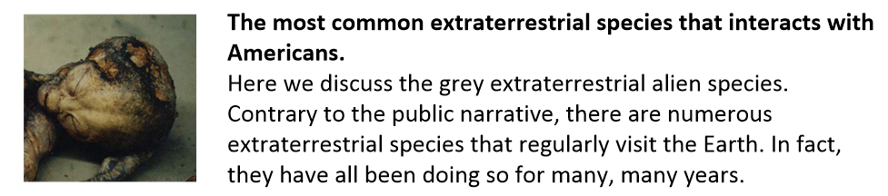
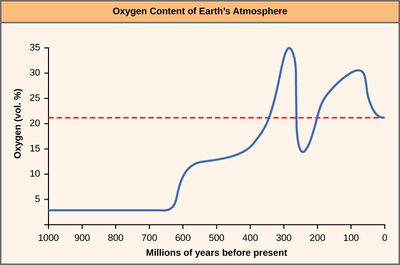
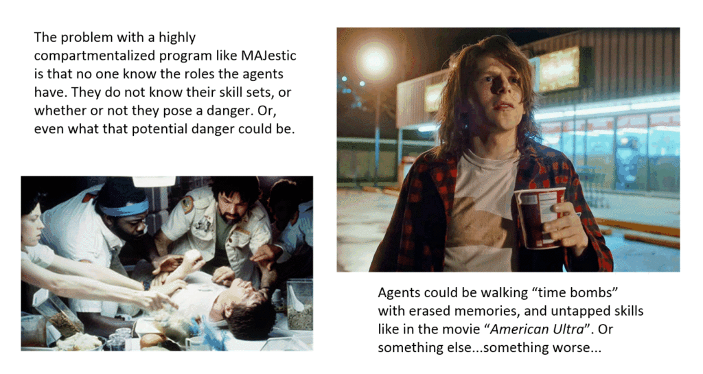
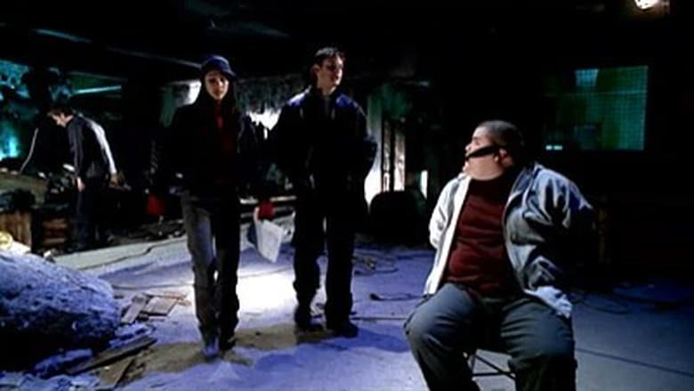
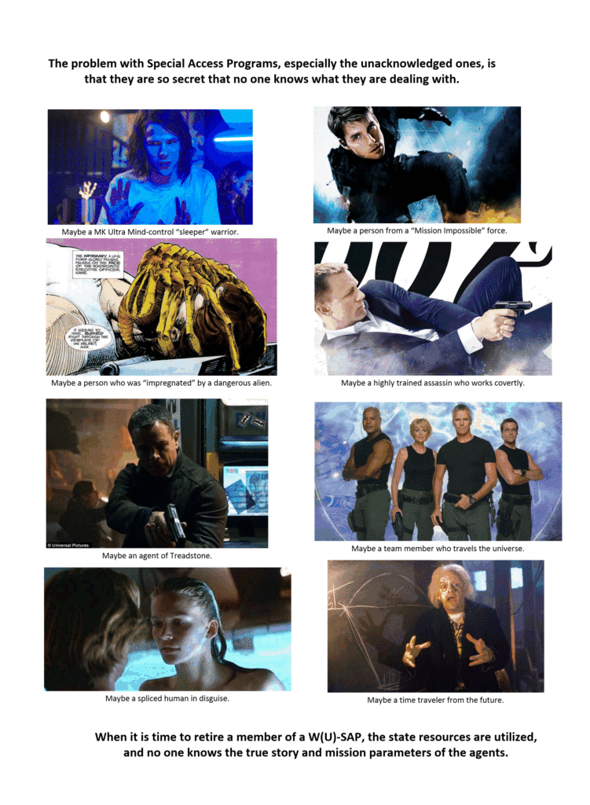

This is part six of a multi-part post.
Zeta Reticuli extraterrestrials
The idea of UFOology has taken on “legs” of it’s own with all sorts of nonsense, out-right lies, partial truths, distortions, mis-characterizations, and disinformation. You can read and watch all kinds of things from healing crystals, to Reptilians, to “Men in Black”.
Meanwhile Joe-and-Sue-Average just discounts EVERYTHING as just a bunch of lies by adolescent hoaxers.
Truthfully, most of what I have read has ABSOLUTELY no connection to my experiences. Yet, unfortunately, by the nature of the subject matter, I am lumped in with all this rubbish. And as such, I get these kinds of questions…
Are (your) Type-I greys the Zeta Reticuli aliens?
I do not know.
I personally think that they have probably visited the solar system at some point in time. (After all, the species themselves has been around a long, long time.) At most, they might actually have a base or colony somewhere in the system. (For some reason. Who really knows?) However, whether or not this species originates from this solar system is a long shot.
The idea that they come from there is only wishful thinking. The reason for this, I believe, is that individuals are trying to locate a suitable earth-like environment to justify their limited understanding of these creatures. Ah, the old “It’s gotta be a G-class star” to hold life” argument.
The idea that this would be a suitable point of origination (of one of the more common extraterrestrial species in our biosphere) derives from the incorrect interpretation of the Betty & Barney Hill “space” map that she remembered under hypnosis.
From time to time I see the idea of actual intelligent ET visitation defended on the basis of the Betty and Barney Hill abduction — specifically, on the basis of the “star map” that Betty Hill allegedly saw while on board the alien space ship during her abduction. Hill purportedly reproduced this map under hypnosis. In the late 1960s Marjorie Fish (a teacher) supposedly succeeded in correlating Hill’s star map with real stars associated with Zeta Reticuli, this proving Hill had been on a ship from Zeta Reticuli. The rest, as they say, is history (Nancy Lieder went on to channel the Zetas about how Planet X would factor into the great cataclysm we all witnessed on Dec 21, 2012 . . . sort of). The Hill star map “recollection” and “correlation” are bogus. Several dedicated researchers have debunked the astronomy of the “star map” (and their rebuttals seem regularly ignored by people like Stanton Friedman, the guy who somehow dismissed the authorship attribution linguistic tests I had performed on the Majestic documents with my novel – nice research there). -Michael Heiser
Finding sun-like stars in (what was once considered) a reasonable distance from the Earth, is very difficult, and the Zeta Reticuli system seemed like a logical point of origination at that time.
Listen to me. I am tell you guys straight. No one knows where the origination point of this species is. No one. Given what I know about them, I would strongly argue that any ways and means of understanding this species would be problematic.

Keep in mind that they are an immensely ancient species, with space flight capability dating back at least 30,000 years.
Mantids
I really have to hesitate when talking or discussing the Mantids. They are a multi-dimensional species, that I personally believe, evolved on the Earth naturally. Being multi-dimensional, their reality is quite different from anything that us humans can comprehend on anything but a trivial level.
You have to take into account our human biases when discussing this species, and adjust our dialogs regarding them appropriately.
It is nightmarish for me to even consider a huge giant insect like being that you refer to as the Mantids. Are you sure that our future will evolve into such a creature?
The physical manifestation of the Mantids in this universe is contingent on their evolutionary home-world environment. It has a much higher concentration of oxygen than ours and as a result they have grown to sizes much larger than what we are accustomed to.
Thus… what? Either [1] they have a certain affinity for our solar system as a nursery for sentient life (for what ever odd and obscure reason), or [2] they themselves have evolved upon this planet.
Choose one.

I have good reason to believe that they originated on Earth as indigenous creatures. I have numerous reasons for this belief.

This question concerning evolution refers to soul-evolution, not species-evolution. I argue that all souls evolve. I further argue that the way souls evolve is via quantum entanglements that are acquired through physical experiences. Thus the reason for living a life.
For us to evolve into a Mantid there would be some serous reconfigurations of the soul garbons and swales.
Some of us humans will eventually evolve into another form. That form might be similar to the Mantid, but could just as likely be something else altogether.
Please do not worry or fret. You will never be compelled to do something that you are not ready for. Additionally, the insectoid form has a very adaptable quantum cloud and soul adaptability. It is a basic primal form.
Mammals are derived forms.
- Insects are a primal form of life.
- Mammals are a derived form of life.
Project Serpo
You, the reader, would be surprised to hear how many times influencers have mentioned “Project Serpo” to me. In every case, they are convinced that it is real, accurate and not nonsense.
What do you know about Project Serpo?
Only what I have read on the Internet.
It seems like a bunch of hogwash to me. But then, what do I know? If you would have told me what I am spewing forth, when I was in university before I joined MAJestic, my opinion would be unprintable here. I would have probably got into an argument leading to a fist-fight. We can only comment on things that breach our very own experiences.
Anything that we have not experienced personally would naturally be considered outrageous and unlikely.
Everything in MAJestic is compartmentalized. I know very little outside of what my role and assignments were. Thus, I am not qualified to comment on it in any way. Sorry.
In any event, if you want to read a summary go HERE.
Political affiliation of extraterrestrials
Yes. People have asked this. Seriously.
Do the extraterrestrials that you have been in contact prefer conservatives or liberals in regards to their oversight?
They did not care.
Most of the humans (I take that back, ALL of the humans) in MAJestic that I have been in contact with were “service to others” sentience, however their political associations were all over the board.
Contrary to the media narrative, conservatives were not selfish bigots, and progressive liberals were not generous angels. There is a wide spectrum of personal beliefs and behaviors based on economies of evolved ethics.
As far as the extraterrestrials were concerned, political association had no bearing on spiritual (quantum) associations.
Fear of Uncle Sam
Sometimes, people have questioned my fear of the United States government. They say that I have “Rights”, and that any accusations against me would be meaningless, and thus harmless. They say absolutely stupid things like “if you did nothing wrong, you have nothing to hide”. Hogwash.
Ha! I know better.
Americans have no “Rights”. It’s all a big charade. And the best that anyone can do is to follow my example and get the heck out of America and far, far, far away from “the line of fire”.
Thus this question…
Why are you so afraid of the United States government?
As if being sucker-punched getting off a plane, entering a completely empty house (even with the light-bulbs, and switch-panels removed and missing), and then being arrested by a SWAT team isn’t enough to make everyone look over their shoulder for the rest of their life, consider my reality…
I could be harmed horribly if the “powers that be” want to “take care of the problem”. And, by “problem”, I mean me. It’s not a Hollywood thing. It’s not some kind of fiction that makes great reading. But yeah, it’s a real and genuine thing.
For me, this is my reality. I signed up for it. I live it.
There are three things (3x) that weigh on my shoulders. Given the state of crazy-town America today, any of these are potential problem areas…
[1] MAJestic could send a “retirement” crew to settle my affairs.
Yes, we all love to watch the television shows. They present everything in a nice and tidy black and white narrative. So easy to understand. So clear, clean and pristine.
But, people, that is not how the world really works. It’s messy. It’s complicated, and it’s very very underhanded.
But, you know, it’s much worse than that. My family might get harmed in the process. Not only myself.
Thus, for me, it is best that I lie low. I make no waves. I keep to myself, and only write the smallest amount of memoirs.
I keep to myself. I do not tell secrets. I do not get into trouble.
There are many ways that I could be harmed, and suppressed, provided that the “Powers that Be” are too lazy to go through normal MAJestic channels to contact me.
(I mean, all you need to do is to use the proper channels. I am still receptive, don’t ya know. And when asked to “shut the fuck up”, I will do so.)
Absolutely.
What I am afraid of is not MAJestic.
In fact, if anything, I think that the organization is more afraid of me that I are of them. Not that I know why, but I think that the secrecy surrounding me and the others in my role was just enough to scare the Dejesus out of everyone.
MAJestic leadership is terrified of me. But, it’s an irrational fear. I am pretty harmless.
From the point of view of MAJestic it is best if we are kept in a monitoring program for as long as possible. Only a handful of people knew what I really am. Of that handful, they were always timidly respectful.
From the point of view of the rest of MAJestic, I could be a weaponized cyborg, a MK-ULTRA programmed lethal killing machine, or a walking plague.
All they really know is that I am a “something” that [1] cost a heck of a lot of funding, [2] over a long period of time, that is [3] under the highest secrecy classifications.
It’s the same sort of reasoning why the Apollo crew had to stay in quarantine once they returned back from the moon, least they carry some form of strange contamination.

It’s an understandable reaction to an irrational fear. The secrecy is so severe, that I could be anything. All anyone actually knows is the amount of money, the amount of time and the amount of resources dedicated to me. Obviously, when the cost approaches that of an aircraft carrier, people start to take notice.
“Who is this guy?” they ask.
He doesn’t look like anything special.

In a way, you can understand the alertness, if not fear, of those “in the know”. They handed myself, Sebastian and one or two more people to a very powerful extraterrestrial species and permitted them to modify us on a genetic level with EBP control.
They didn’t know what the changes would be. We could be anything… and Hollywood has some pretty good ideas to scare the living Dejesus out of you all with…

It was better safe than sorry, so I was placed under institutional observation.
So, MAJestic is just fine that I am “out of their hair”. Outside the USA where, if something bad happens, at least it won’t be on American soil against Americans.
Personally, I strongly believe that everything and everyone is just “tickled pick” that I am far away, retired, and just getting drunk and playing with pretty girls.

But that is not what I am afraid of.
Not MAJestic. I am afraid of the American “Deep State”.
They are a dangerous bunch of ignorant SOB’s. I will repeat. They might think that they are “smart”, but they are not. They are a bunch of ignorant paper-pushers and bean-counters. Yes, they make good money, and have great vacations, but outside of their protective enclaves (and yes they do live within “bubbles”) they are functionally useless.
The “Deep state” is a serious danger.
[2] A real danger – the American “Deep State”.
The thing about the American “Deep State” is that they are a big bureaucracy, that is staffed with some very competent people, with access to a seemingly endless supply of funding. If someone “gets a hair up their ass” about me, they can terminate my existence with “extreme prejudice”.
Look at all the grief that that have been giving to Donald Trump. All it takes is one asshole.
They could (for instance) [1] de-mothball the ELF transmission facilities, restaff it. Then target my ELF probes and saturate the living fuck out of me. They could play the theme song from “Barney” until I go absolutely bonkers.
You know, do a totally uncalled-for asshole-dick move.
Though...seriously. Were this to happen, I would know what was going on and why. And I wouldn't take it. There won't be any mercy from me. I would force MWI switching so severe on the United States that it would look like a chemical waste dump populated with retarded cripples. Everyone would be covered with sores and pustules. I would enact Holy Terror. It would make the worst nightmares from the (television show) the Twilight Zone look like kid's play. Let me be alone and live my life in peace. Do Not Fuck With Me.
Not only that, but knowing what they have in my binder, they could [2] could do other things equally terrifying as well.
Typically, if saturation by the ELF core kit #1 probes is not successful in driving me to kill myself, agents will be sent to “take care of the problem”. Only this time, they might be (dare I say it) [3] CIA. Yikes!
Though, they will need to operate within China.
However, as terrifying as that all is, the United States “deep state” government is the least of my worries.
[3] The powerful ignorant and selfish.
There will be others (the ignorant and the foolish) who might wish to kill me for my probes, or maybe try to harness me (somehow) so that they can traverse the various world-lines. Do not laugh. I’ve met these kinds of people.
Their egos are far, far larger than any kind of reality that can hold them. They are often like little boys who were never punished as a child.
So, yes. They could try to seize what I have by force. Even if they aren’t sure that anything beneficial would result from it. (Heck, one or two million is a drop in the bucket, they would argue.)
Not that they could. I my EBP is encoded genetically, not just simply implanted. Further, you would need a type-I grey medical crew to extract and replant into the new host. This would necessarily require the growth of a completely new artifice. And, who the Fuck is going to be the Pilot?
If so, it would be a nightmare scenario right out of “The Lathe of Heaven”. Where a scientist tries to harness my abilities instead of extracting my probes.
The Lathe of Heaven is a 1971 science fiction novel by American writer Ursula K. Le Guin. The plot revolves around a character whose dreams alter past and present reality "The Lathe of Heaven" takes place in Portland, Oregon in the year 2002. Its main character, an insignificant working class man named George Orr, is plagued by 'effective dreaming', where his dreams literally come true. He first learns of his unique ability at the age of seventeen, when he dreams of his aunt dying in a fiery car crash. When he wakes up the following morning, he finds that his aunt, who had been staying at the house only the night before, actually died in a car crash days before. Unfortunately, nobody, other than George, ever notices the change, and over the years, George grows up suffering in silence, horrified by the immense power of his dreams and nightmares. At the start of the film, a 30-year old George has been given a court order to attend psychiatric therapy following an accidental overdose on prescription drugs. This is where he comes into contact with oneirologist Dr. Bill Haber, a specialist in sleep disorders and dreams. With the use of hypnosis and a brain wave regulator called the 'Augmentor', Haber begins treatment aimed at helping George feel more at ease with his dreams. However, Haber is astonished to find that George's dreams actually can reshape reality. At first, Haber's experimentation with his patient's unique ability is limited in scope, such as changing a picture on the wall. However, with each session, Haber becomes more ambitious as he directs George to dream of a Portland where the sun is always shining, or of the Haber Institute of Oneirology, both of which appear in the new post-dream reality. Seeing that he is being used instead of being cured, George tries to find a way to switch therapists. Unfortunately, he runs into brick walls at every turn when dealing with the state bureaucracy of the future, and even the lawyer he hires, Heather LeLache, seems powerless to stop Haber's 'treatments'. Undaunted, the well-intentioned Haber becomes even more daring in the use of George's abilities, as he directs George to dream away monumental human problems, such as overpopulation, war, and racism. Unfortunately, Haber's attempts to rectify the problems of the world end up backfiring, necessitating further sessions of 'effective dreaming' to solve the troubles brought on by the previous ones... Like a man who has been granted three wishes by a genie, Haber becomes intoxicated by the potential for George's ability to serve as a 'quick fix' for the numerous problems that plague the world. Despite his good intentions, he quickly learns that there are unexpected and serious consequences for each great leap forward. When he cures Portland of its rain problem, it creates a drought and the need for strict water rationing among the population. When he uses George's dreams to resolve overpopulation, he unleashes a plague that inadvertently pushes the nations of the world closer to war. And his attempts to bring peace on Earth result in an alien invasion, prompting the nations of the world to put aside their differences in the face of a common enemy. Of course, Haber refuses to believe that the unintended effects are his own doing, and deflects the blame onto George's shoulders. From Haber's perspective, the rationale behind the decision is sound, and it is in the execution where the problem lies. Like all good science fiction, "The Lathe of Heaven" is a mere reflection of the human condition, allowing to us to see ourselves from a different perspective. Human history is littered with individuals and societies as zealous as Haber, whose good intentions and desire for easy solutions have unleashed unexpected 'side effects', often with serious consequences. DDT, thalidomide, the atomic bomb, strip mining, and even the Y2K bug are examples of 'quick fixes' that have had unintended social, political, economic, and ecological impacts. In "The Lathe of Heaven", Le Guin has exaggerated the ability of man to reshape his environment, yet the underlying principle still remains the same-- we must temper our desire to reshape the world with caution and a full understanding of what the possible ramifications could be. -Media Circus
Thus, I have every right to be fearful and cautious. I have every right.
So, as a result, I shun fame, and just let whom so ever stumble upon this blog do so and read. If they benefit from it, then great. If they don’t then so what? As long as I am keeping to myself, minding my own business, and letting the world pass me by, I am just fine.
I’m just gonna be a drunk ol’ geezer on the beach watching the world go by. And doing “good works” in my own, often messed up way. I’m the friend to dogs and cats all over the world and protectors of the little guy…
And none of youse guys need to worry about nothin’. I’m not going to do anything that a pretty girl, a bottle of Jack and a cigar can’t handle.
I want to make myself perfectly clear on this point.
I do know the “purpose of life”, and I do know how everything fits together in our universe. So, since I do, I understand that we can realign our swales and garbons through our thoughts as we acquire experiences. Thus, for me to advance spiritually, I will need to acquire fun and happy experiences and the resultant thoughts…
Thus the life that I currently lead.
Being fearless when having MWI egress potential
Can you believe that some people actually argue against being fearful of ol’ Uncle Sam? Yeah. It’s kind of hard to fathom, but there you have it.
That makes no sense to have such a fear. You can dimensionally shift to another world-line using the core kit #2 probes.
That is false.
Currently, I am limited in my ability to world-line shift to only those (drone pilot pre-configured) world-line groups. Today, I would do so in “manual” mode with is (I believe) unassisted.
I could shift, but it would still (most probably) contain the same conditions that I would be trying to flee from. Greatly divergent world-line travel is limited in my access ability.
OK. ok. That's not wholly and entirely true. For all PRACTICAL purposes, my world-line switching ability is limited. However, I have control over my lock-outs. (Remember the good ol' boy Lester at ADC Pine Bluff?). As such, I can easily, and I do mean easily... like right now, change everything. I don't want to because I like my retirement. However, if I am attacked, or one of my fears manifest, I will swap the lockouts and unleash the dog's of Hell. Please do not mess with my reality.
Sorry for being such a silly fellow.
All that I am saying is that the MAD (Mutually Assured Destruction) nuclear deterrent of the 1960’s through to the 1980’s was based on the idea and concept that if anyone tried to mess with the USA that we would unleash nuclear Hell on the world. This is my comment that if a dog is sleeping, you let them lie. You don’t get up and start kicking the dog and not expect it to bark, or worse… take a bite out of your neck.
My peaceful passive enjoyment of my reality is one in which I am quite happy with the status quo. You must agree, and plainly see, that I have no desire to alter my reality in any kind of substantive change. Ah. The sky is blue, the grass is green. It’s green grass and high-times forever.
But then, why worry?
It’s been my experience that most of our fears NEVER manifest. And, I am sure that noting will ever come to these fears, simply because no one is that fucking stupid.
As Fucked up as this world-line is, at least there is pizza, beer and pretty girls. Not to mention all the delicious flavors of ice cream. At least that is pretty much the same on every world-line. Eh?
I do have to admit that there is some really strange and odd things going on in the United States today. These things are all fucked up and I, for one, am just glad that I am not anywhere near this mass insanity. I guess I could go on and on, but then the water buffalo Michelle Obama is considered to be the most beautiful woman in America, you know that something is seriously wrong.
Something is wrong.
I attribute it to mass thought manipulation that is pushing world-line divergence into some pretty odd directions. People, this is what an attractive woman looks like…
Need to create slides…
And so they don’t accept “no” for an answer…
To harass you, the ELF core kit #1 probes would have to be engaged. With the core kit #1 probes engaged, you could reconfigure your limits beyond the current “lock out” state. Couldn’t you dimensionally shift then?
Yes.
And in doing so, I would need to dimensionally world-line shift to maybe a 3 to 4% dimensional variance to enter a world-line without harassment. That is quite a variance. It really is. It can be problematic.
It is tricky and possibly dangerous.
At a 4% divergence, I could well lose many things that matter to me. Such as my family, security, lifestyle, happiness. Not to forget, driving at the right side of the road, wearing socks, and having dogs and cats as pets. Yah.
Do you really want to roll the dice and see whats out “there”? Well, do you?
Imagine a world were pizza was never invented, or where your wife was an angry evil, disgusting scold.
Or perhaps even appear in a world-line armless, or legless. Watch the movie “The Butterfly Effect” to see what horrors can manifest. Please believe me in this. It is not worth it. Not at all.
The Butterfly Effect is a 2004 American psychological thriller sci-fi film written and directed by Eric Bress and J. Mackye Gruber, starring Ashton Kutcher and Amy Smart. The title refers to the butterfly effect, a popular hypothetical example of chaos theory which illustrates how small initial differences may lead to large unforeseen consequences over time.
Real Fears
Let’s look at what the real issues are. Ok?
Seriously, harassment resulting from core kit #1 probes can be controlled by your own admission, if this manuscript becomes well known, you would become too public a person to harm. What is your real fear?
Extraction of my probes and reinsertion into another person could be incorrectly thought of providing that person with dimensional world-line travel ability. This is a powerful tool kit. (Extraction will be fatal for me.) The United States government is not who I am afraid of.
Think of Hillary Clinton, George Soros, or Kim Jong-un. Do you understand now? What if they could cluster world-lines? What do you think that life would be like under their direction, eh?
On 12 December 2013 official North Korean news outlets released reports that due to alleged "treachery," he had ordered the execution of his uncle Jang Song-thaek. On 9 March 2014, Kim Jong-un was elected unopposed to the Supreme People's Assembly. He is the first North Korean leader born after the country's founding. Kim Jong-un is widely believed to have ordered the assassination of his brother, Kim Jong-nam in Malaysia in February 2017.
Who cares?
Well… I do.
OK. But you will be dead, and your world-line will terminate. So who cares if someone else has access to “your” technology?
World-lines cluster in groups. My job was to stabilize the world-lines to a (relatively) “safe” and “prosperous” collection. I did so, and prevented a major (mystery – to me) disruption (in the sentience aspects of the human quantum cloud) in the years of 1995 to 2004-5. After 2004-5, I was “retired” and my actions went from “active” to “passive”.
I ask the reader this; after 2004 has the world continued to be safe and prosperous? Well has it?
Hey! What started to happen after 2004? What trends began? After 2004, all of us stopped anchoring the world-lines. It has been careening wildly ever since.
If someone else has control of this technology, they can control YOUR (the reader’s) world-line direction. This action would greatly impearl the world-line of the rest of humanity. You might think Hitler was bad, or Stalin, that would be nothing to the hell that could be unleashed if an Islamic fascist got in control of this technology, and anchored world-lines to fit his idea of perfection.
In the wrong hands, the ability to alter reality is a very dangerous skill.
Alternatively, perhaps a man-hating radicalized feminist, or a real (actual) pedophile, or someone who thinks that if drinking wine and cigarettes would be eliminated the world would become a better place?
Imagine a dog hater, or a cat hater. Imagine someone who thinks that pineapple on pizza is so wonderful that it becomes the daily meal of choice.
Imagine an ideal world under Jerry Falwell. Yikes!
Jerry Lamon Falwell Sr. (August 11, 1933 – May 15, 2007) was an American Southern Baptist pastor, televangelist, and conservative activist. He was the founding pastor of the Thomas Road Baptist Church, a megachurch in Lynchburg, Virginia. He founded Lynchburg Christian Academy (now Liberty Christian Academy) in 1967 and Liberty University in 1971 and co-founded the Moral Majority in 1979.
Let us not stop there.
What if they have odd personality quirks? That would directly translate into actional deviance’s.
Some men like women with big feet. Some men think that women need to have their faces veiled because the female form is ugly. What if they think that big asses on enormous sized obese women were attractive… What then?
All that being said, the true risk is that humans fail to evolve into an approved sentience archetype. If that occurs, the human evolutionary track will have to be scrapped or culled, and a new direction established.
It could be very ugly.
If you want to go to the start of this series of posts, then please click HERE.
MAJestic Related Posts – Training
These are posts and articles that revolve around how I was recruited for MAJestic and my training. Also discussed is the nature of secret programs. I really do not know why the organization was kept so secret. It really wasn’t because of any kind of military concern, and the technologies were way too involved for any kind of information transfer. The only conclusion that I can come to is that we were obligated to maintain secrecy at the behalf of our extraterrestrial benefactors.


MAJestic Related Posts – Our Universe
These particular posts are concerned about the universe that we are all part of. Being entangled as I was, and involved in the crazy things that I was, I was given some insight. This insight wasn’t anything super special. Rather it offered me perception along with advantage. Here, I try to impart some of that knowledge through discussion.
Enjoy.


Influencer Questions
Here are posts that have gathered a series of questions from various influencers. They are interesting in many ways and could help all of us unravel the mysteries of the lives that we live.

MAJestic Related Posts – World-Line Travel
These posts are related to “reality slides”. Other more common terms are “world-line travel”, or the MWI. What people fail to grasp is that when a person has the ability to slide into a different reality (pass into a different world-line), they are able to “touch” Heaven to some extent. Here are posts that cover this topic.


John Titor Related Posts
Another person, collectively known by the identity of “John Titor” claimed to utilize world-line (MWI egress) travel to collect artifacts from the past. He is an interesting subject to discuss. Here we have multiple posts in this regard.
They are;